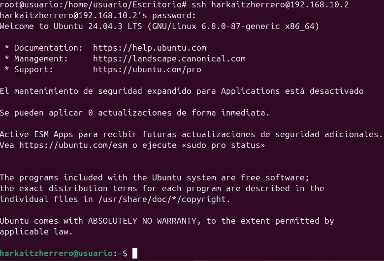
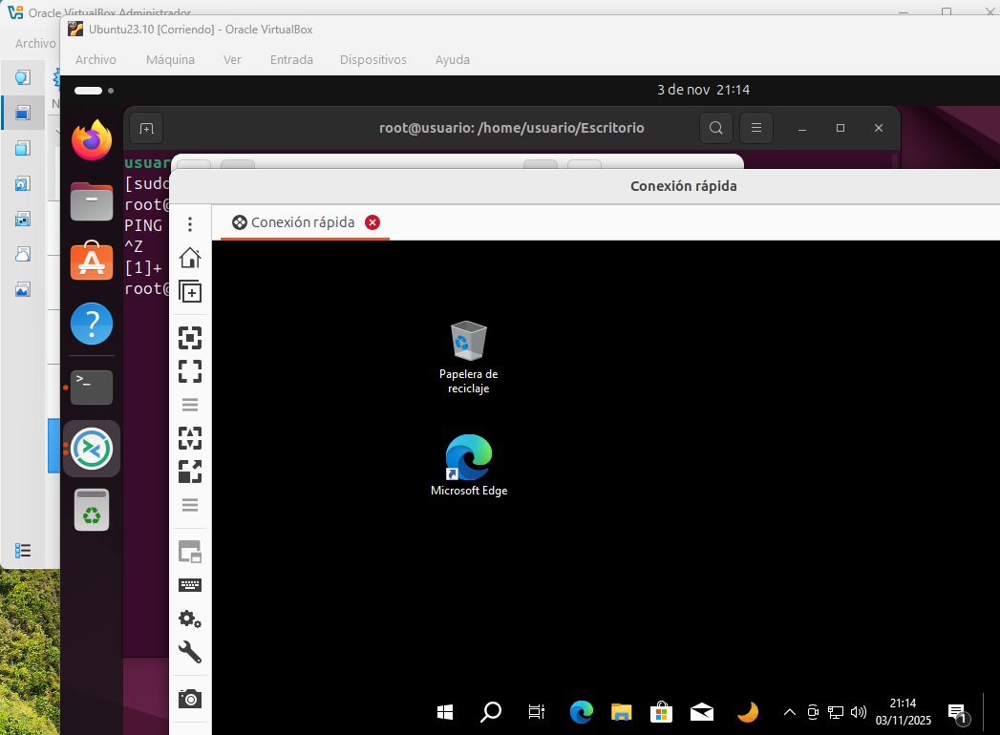
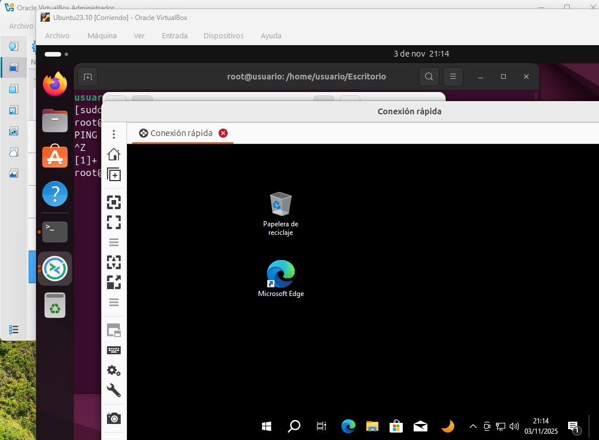

EJERCICIO 1: Creación usuario Ubuntu y conexiones SSH
En este ejercicio creamos un usuario en Ubuntu, instalamos el servidor ssh para conectarnos con otros equipos Linux, nos conectamos con Putty desde Windows a un equipo Linux, y finalmente lo configuramos para acceder sin tener que poner la contraseña.
- Crear usuario
- conexión servidor SSH 
- Conexión con Putty
- Conexión sin contraseña con keygen


 
